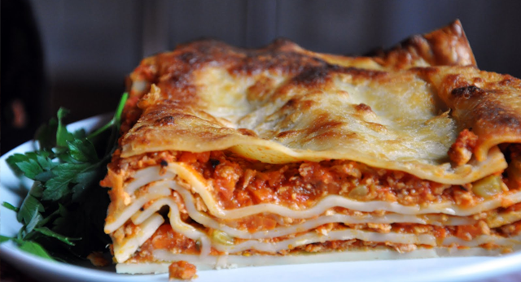

Lasagna

Description
This is the recipe of the famous Per Mobergs lasagna!
Enjoy it right after cooking it or wait until the next day for the better experience! Also, I strongly recommend to serve a Spanish red whine to this delicous dish.
Ingredients
- Nötfärs 1000g
- Riven ost (prästost) 500g
- Grädde 10dl
- Oxbuljong
- Krossade tomater 480g
- Tomatpure 1dl
- Lasagneplattor färska 10st
- Mjölk 10dl
- Smör 250g
- Champinjoner 250g
- Vitlök 2 klyftor
Steps
- Finhacka champinjoner och vitlök
- Stek champinjonerna och vitlöken tillsammans med tomatpuren
- Stek nötfärsen och blanda i champinjonerna
- Häll i krossade tomater tillsammans med oxbuljong och låt koka i 45 minuter
- Sätt ugnen på 225 grader
- Blanda mjölk och grädde samt koka upp och tillsätt smöret för att göra bechamelsås
- Placera ett lager lasagneplattor i botten av en ugnsform och tillsätt sedan köttfärsen
- Jobba lager efter lager med varannan köttfärs och bechamelsås
- Avsluta med ett sista lager bechamelsås och strö den rivna osten över
Smaklig måltid!